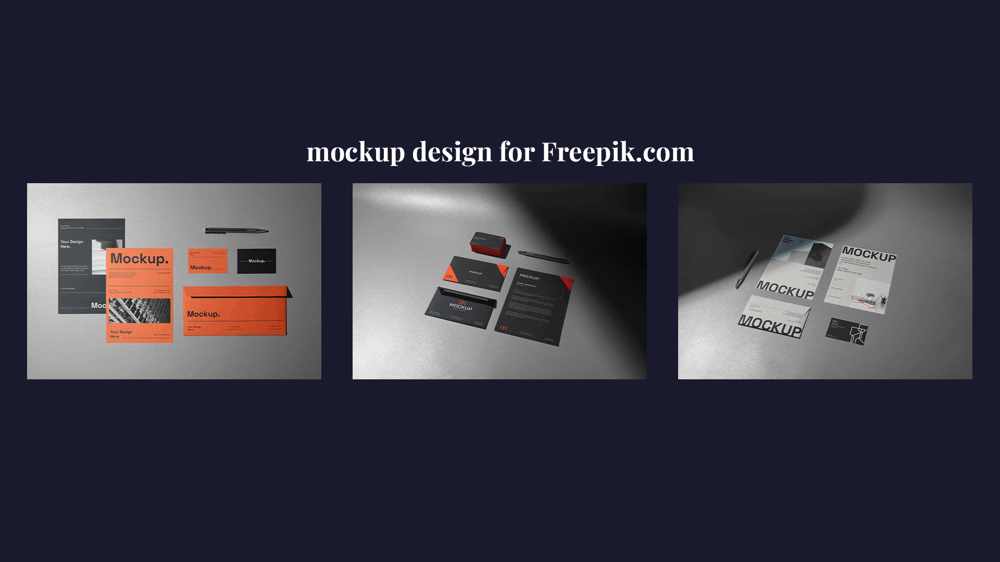
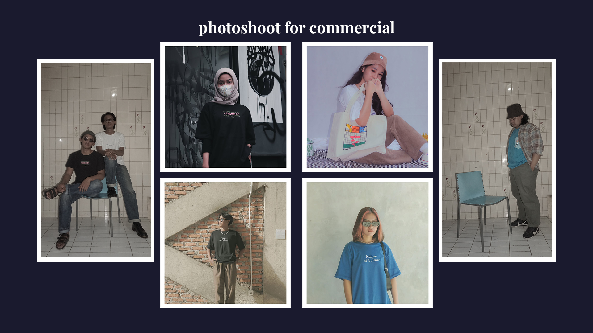
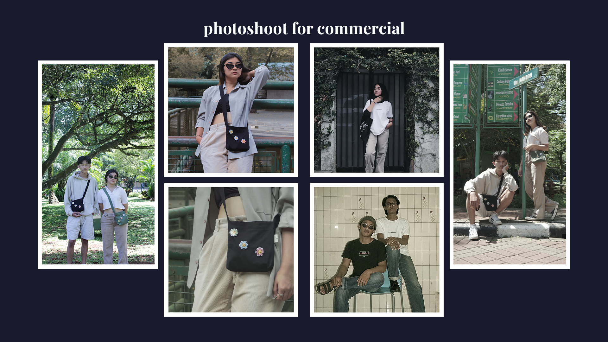

Quick Stats:
4+
Tahun Pengalaman
800+
Total Video Di-render
530M+
Total View (Estimated)
[01] RIWAYAT_KERJA.LOG
Editor Utama - [Channel MOOBYL & JONPANIMA]
2023 - Sekarang | Full-Time
- Menulis dan membuat skrip untuk cerita animasi.
- Memproduksi dan mengedit 1 video konten animasi/minggu dengan durasi 10-15 menit.
- Bertanggung jawab atas editing harian 3-4 video shorts/minggu.
Editor Utama- [Facebook Page Muezza]
2022 - 2023 | Full Time
- Bertanggung jawab atas editing 2 video kompilasi meme/minggu.
- Membuat highlights dari video streaming.
Desainer Mockup - [Fanatika Studio - Freepik Exclusive Contributor]
2022 - 2024 | Freelancer
- Membuat dan mengunggah template mockup, seperti display kartu nama, kemasan produk, atau layar gadget, yang siap pakai.
- Bertanggung jawab atas pembagian task di tim kecil.
Videografer & Editor - [PT KB Finansia Multi Finance - Kreditplus]
2021 | Freelancer
- Bertanggung jawab atas pengambilan gambar untuk Company Profile.
- Mengedit video Company Profile.
- Membuat motion graphic untuk kebutuhan media sosial.
[02] PEKERJAAN_SEKARANG.PROJ
Konten Weekly YouTube Channel MOOBYL (16k Subs) & JONPANIMA (778k Subs)

::SEQUENCE_MOO.gif | MOOBYL

::SEQUENCE_MOO.gif | MOOBYL

::SEQUENCE_JON.gif | JONPANIMA
Klik thumbnail di bawah untuk membuka video YouTube.


Tugas & Alur:
Footage Recording
100%
Rough Cut Progress
85%
Color & SFX
60%
[03] OTHERS.PROJECT
Klien: [Kredit Plus]
Jenis: Video Motion Grafis (Durasi 135 detik)

Klien: [Kredit Plus]
Jenis: Video Podcast & Monolog

Klien: [Fanatika Studios]
Jenis: Mockup Design

Slot Tersedia
Status: **OPEN**
Hubungi Saya untuk Project Baru!
[04] PERSONAL_PROJECT.LOG
Kompilasi proyek personal untuk brand saya sendiri.



